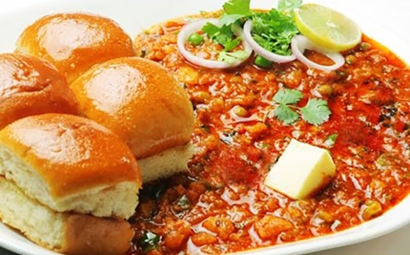

Pav Bhaji

Pav Bhaji is a popular Indian street food dish consisting of a spicy and flavorful vegetable curry called bhaji served with soft, buttered buns known as pav. The bhaji is made by simmering a mixture of mashed vegetables (usually potatoes, peas, tomatoes, and bell peppers) with a blend of aromatic spices and butter. It's typically garnished with fresh coriander, chopped onions, and a squeeze of lemon juice. The pav is toasted with butter and served alongside the bhaji, creating a delicious and satisfying meal that's enjoyed throughout Ind
Ingredients
- Potatoes
- Peas
- Tomatoes
- Bell peppers
- Onions
- Butter
- Garlic
- Ginger
- Pav (soft buns)
- Spices (such as cumin, coriander, red chili, and turmeric)
- Fresh coriander leaves
- Lemon juice
- Salt to taste
Instructions
- Boil, peel, and mash the potatoes.
- Cook the peas until tender and keep them aside.
- Heat butter in a pan and add finely chopped onions.
- Saute until onions turn translucent, then add minced garlic and ginger.
- Add chopped bell peppers and cook until they soften.
- Stir in the spices (cumin, coriander, red chili, and turmeric).
- Add chopped tomatoes and cook until they turn mushy.
- Add mashed potatoes and cooked peas to the mixture.
- Mix well and simmer, adding water as needed, to achieve the desired consistency.
- Season with salt and continue to cook for a few minutes.
- Garnish with fresh coriander leaves and a squeeze of lemon juice.
- For the pav, slit them, apply butter, and toast them on a griddle until golden.
- Serve the pav alongside the bhaji and enjoy!
Home
top of page